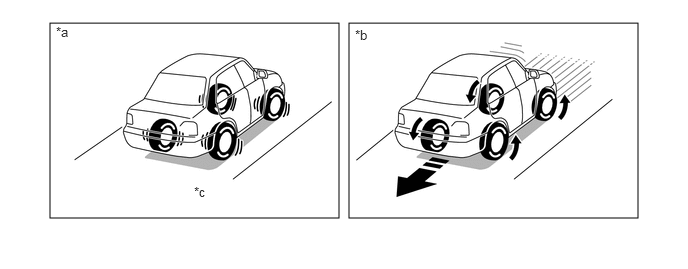

系统控制
在坡路上起步时，驾驶员从制动踏板切换到加速踏板时，上坡起步辅助控制保持 4 个车轮的制动液压力以防车辆倒退。
在坡路上起步时，上坡起步辅助控制可使驾驶员从制动踏板缓慢轻松地切换到加速踏板，且车辆不会倒退。此外，最大程度地减少了需要驻车制动以防车辆倒退的情况。
在光滑路面的坡路上起步时，驾驶员无需快速踩下加速踏板，否则会导致不必要的车轮空转。

| *a | 带上坡起步辅助控制 | *b | 不带上坡起步辅助控制 |
| *c | 施加制动以防车辆倒退 | - | - |
上坡起步辅助控制启动条件
防滑控制 ECU 根据来自加速度传感器的信号判断车辆是否在上坡路上，并在满足下列所有条件时激活上坡起步辅助控制。
·
换档杆置于 P 或 N 以外的任何位置。（车辆前部或后部朝向山顶的情况下爬坡） ·
车辆静止。 ·
加速踏板未踩下。 ·
未施加驻车制动。 |
上坡起步辅助控制取消条件
如果满足下列任一条件，则取消上坡起步辅助控制。
·
换档杆移至 P 或 N。 ·
踩下加速踏板。 ·
施加驻车制动。 ·
上坡起步辅助控制开始后经过约 2 秒。 |